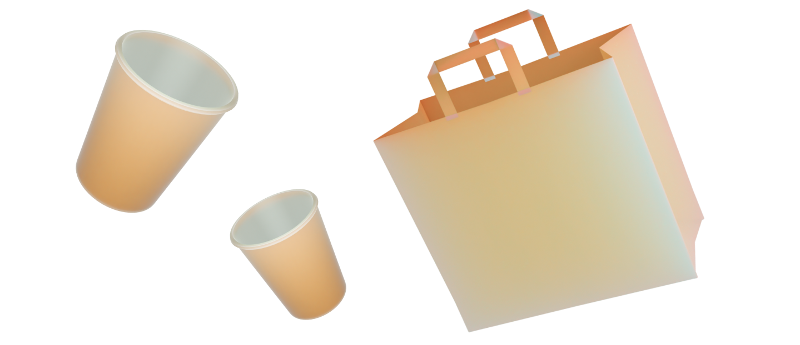

Статьи
Что делать с картоном?
Картон — это популярный материал, который используется для упаковки различных товаров, однако, он имеет ряд негативных свойств, которые могут привести к загрязнению окружающей среды.
Переработка одной тонны картонных изделий позволяет сберечь до 17 деревьев и более 4000 киловатт-часов энергии.
 Негативные свойства картона
Негативные свойства картонаВо-первых, большинство видов картона не являются биоразлагаемыми, поэтому они могут оставаться в природе в течение десятилетий. Во-вторых, производство картонных изделий требует большого количества энергии и ресурсов, что может негативно сказаться на окружающей среде.
 Что с ним делать?Переработка — картон можно перерабатывать и использовать повторно для производства новых изделий.
Компостирование — биоразлагаемый картон можно использовать в качестве удобрения для растений.
Использование в ремонте — картон может использоваться в качестве временного защитного покрытия во время ремонтных работ.
Использование в творческих проектах — картон может использоваться в качестве материала для создания различных художественных и рукодельных проектов.